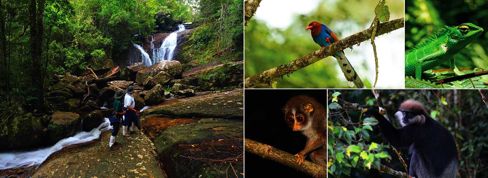
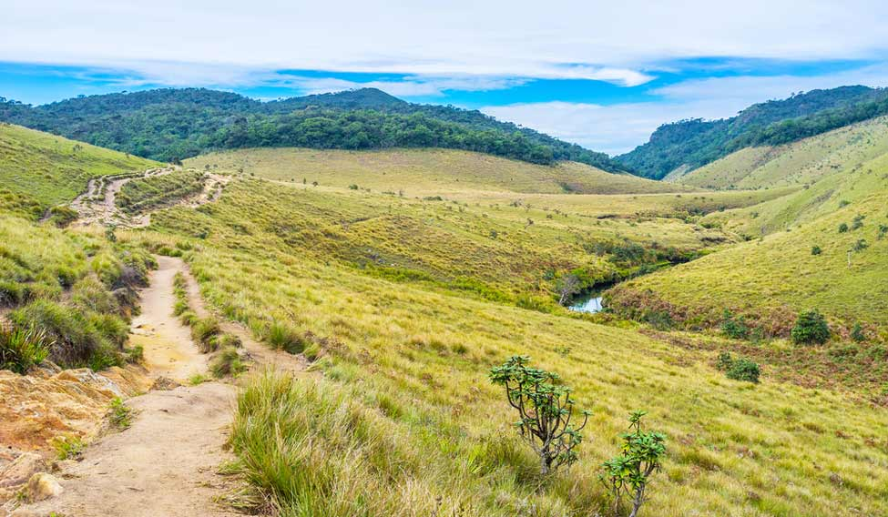
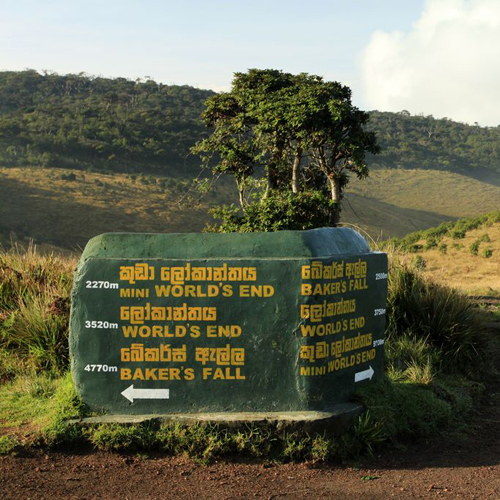

Located on Sri Lanka’s south east coast and established as a protected area in 1938, Yala National Park is a large reserve with a mixture of habitats ranging from open parkland and dense jungle, to a myriad of flooded lagoons and high coastal sand dunes. This varied terrain supports a wide range of flora and fauna. The popular Yala National Park is believed to have the world’s highest concentration of leopards. The average density of these majestic creatures is as high as one cat to every square kilometre, although sightings of the elusive leopard are still rare. Other animals you might spot whilst in Yala include both sambar and spotted deer, wild boar, crocodile, langur and toque monkey, golden jackal and even the sloth bear during June and July when the palu tree fruits. Birdlife is also abundant here with over 200 species recorded and the reserve is a perfect combination of freshwater, marine, scrub and woodland areas for the diversity of birds.
A UNESCO-listed World Heritage Site and Biosphere Reserve, Sinharaja Forest Reserve is the last viable area of primary tropical rainforest in Sri Lanka featuring tumbling waterfalls, bubbling pools and emerald ferns. Situated in the south west of the island, the forest’s canopy towers up to 45m and astonishingly over two-thirds of the trees are endemic, many of them even considered rare. However, one of the main reasons to visit Sinharaja is for the excellent birdwatching. The reserve supports over 80% of the island’s bird species as well as being a habitat for endemic birds such as the green-billed coucal, the blue magpie and the red-faced malkoha. Butterflies, insects, amphibians and reptiles also live in this rich biodiverse reserve as well as mammals such as the rare leopard, purple-faced langur, rusty spotted cat and three types of squirrel.


Up in the central highlands, the Horton Plains measure up to an impressive 2,100 metres above sea level, making it the highest plateau in Sri Lanka and consequently named of the ‘Roof of the Island’. The plains comprise largely of cloud forest and lush montane grasslands which are rich in endemic plants and animals that have adapted to the cool climate.Whilst the elephant disappeared from this region back in the 1940s, the Horton Plains are home to a wide variety of mammals, birds, amphibians and reptiles. The most common mammal seen is the sambar deer who skirts through the long grasses and moves in large herds. Giant squirrels, wild boars, rusty-spotted cats and purple-faced langurs are amongst some of the 24 species of mammal found here, and the Horton Plains slender loris, one of the world’s most endangered primates, can also be found in the highlands. Rare lizard species such as the rhino-horned lizard reside in the cloud forests, and for bird enthusiasts there are both a huge range of migratory and endemic birds to watch.

